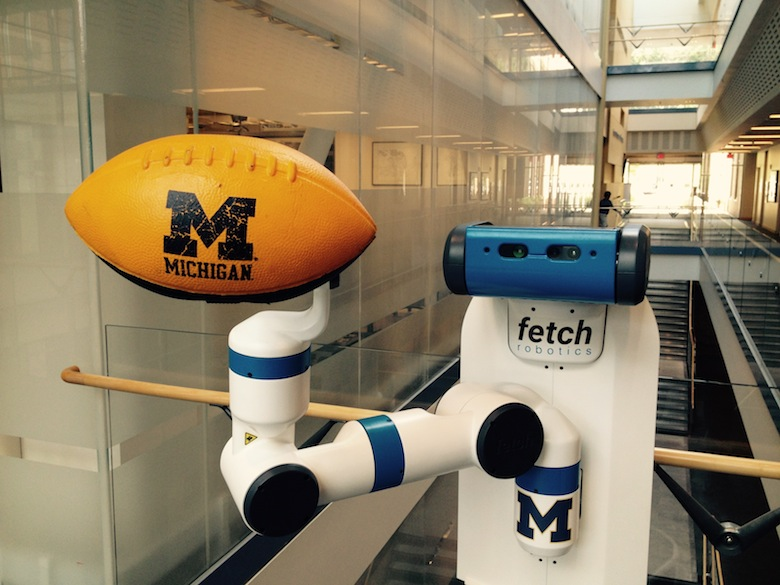
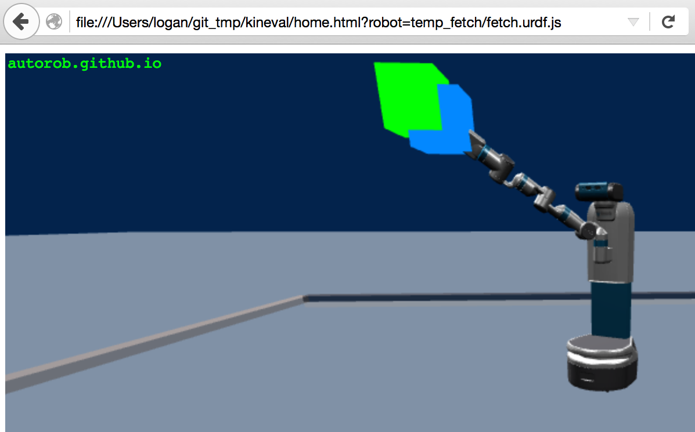
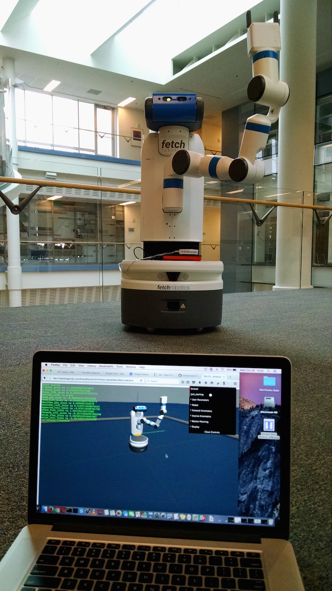
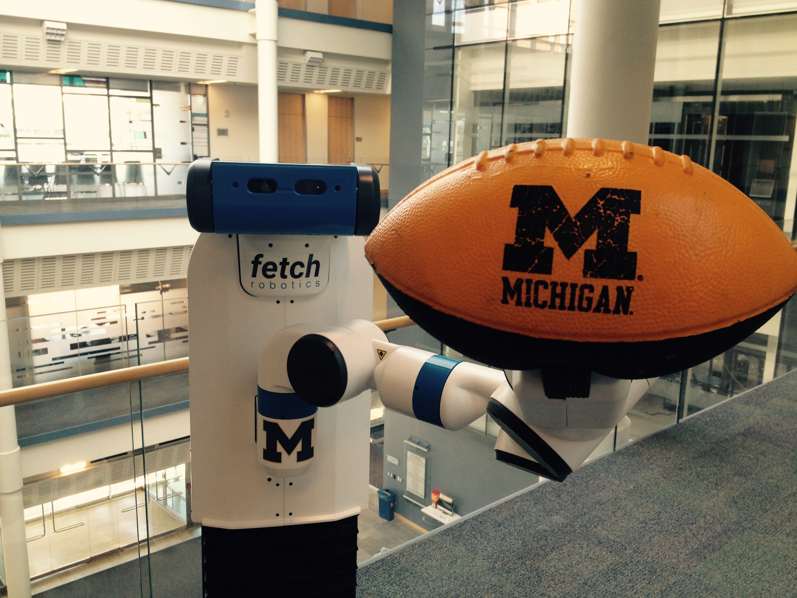

Introduction
AutoRob is an introduction to the computational foundations of autonomous robotics for programming modern mobile manipulation systems. AutoRob covers fundamental concepts in autonomous robotics for the kinematic modeling of arbitrary open-chain articulated robots and algorithmic reasoning for autonomous path and motion planning, and brief coverage of dynamics and motion control. These core concepts are contextualized through their instantiation in modern robot operating systems, such as ROS and LCM. AutoRob covers some of the fundamental concepts in computing, common to a second semester data structures course, in the context of robot reasoning, but without analysis of computational complexity. The AutoRob learning objectives are geared to ensure students completing the course are fluent programmers capable of computational thought and can develop full-stack mobile manipulation software systems.
The AutoRob course can be thought of as an exploration into the foundation for reasoning and computation by autonomous robots capable of mobility and dexterity. That is, given a robot as a machine with sensing, actuation, and computation, how do we build computational models, algorithms, software implementations that allow the robot to function autonomously, especially for pick-and-place tasks? Such computation involves functions for robots to perceive the world (as covered in Robotics 330, EECS 467, EECS 442, or EECS 542), make decisions towards achieving a given objective (this class as well as EECS 492), transforming action into motor commands (as covered in Robotics 310, Robotics 311, or EECS 367), and usably working with human users (as covered in Robotics 340). Computationally, these functions form the basis of the sense-plan-act paradigm that defines the discipline of robotics as the study of embodied intelligence, as described by Brooks. Embodied intelligence allows for understanding and extending concepts essential for modern robotics, especially mobile manipulators such as the pictured Fetch robot.
AutoRob projects ground course concepts through implementation in JavaScript/HTML5 supported by the KinEval code stencil (snapshot below from Mozilla Firefox), as well as tutorials for the ROS robot operating system and the rosbridge robot messaging protocol. These projects will coverrobot middleware architectures and publish-subscribe messaging models, graph search path planning (A* algorithm), basic physical simulation (Lagrangian dynamics, numerical integrators), proportional-integral-derivative (PID) control, forward kinematics (3D geometric matrix transforms, matrix stack composition of transforms, axis-angle rotation by quaternions), inverse kinematics (gradient descent optimization, geometric Jacobian), and motion planning (simple collision detection, sampling-based motion planning). Additional topics that could be covered include network socket programming, JSON object parsing, potential field navigation, Cyclic Coordinate Descent, Newton-Euler dynamics, task and mission planning, Bayesian filtering, and Monte Carlo localization.

KinEval code stencil and programming framework
AutoRob projects will use the KinEval code stencil that roughly follows conventions and structures from the Robot Operating System (ROS) and Robot Web Tools (RWT) software frameworks, as widely used across robotics. These conventions include the URDF kinematic modeling format, ROS topic structure, and the rosbridge protocol for JSON-based messaging. KinEval uses threejs for in-browser 3D rendering. Projects also make use of the Numeric Javascript external library (or math.js) for select matrix routines, although other math support libraries are being explored. Auxiliary code examples and stencils will often use the jsfiddle development environment.
|
 You will use an actual robot (at least once)! While AutoRob projects will be mostly in simulation, KinEval allows for your code to work with any robot that supports the rosbridge protocol, which includes any robot running ROS. Given a URDF description, the code you produce for AutoRob will allow you to view and control the motion of any mobile manipulation robot with rigid links. Your code will also be able to access the sensors and other software services of the robot for your continued work as a roboticist. |
Course Staff and Office Hours
Course Instructors
Chad Jenkins
|
|
 |
Elizabeth Goeddel
|
Graduate Student Instructors | |
 |
Isaac Madhavaram
|
Haoran Zhang
|
|
Nikhil Sridhar
|
Office Hours Calendar
Winter 2025 Course Structure
This semester, the AutoRob course is offered in a synchronous in-person format across a number of sections this semester: two undergraduate in-person sections (Robotics 380 and EECS 367) and an in-person graduate section (Robotics 511).
Course Meetings:
Monday 4:30-7:20pm Eastern, Chrysler Building 133
Laboratory Sections
Friday 2:30-4:20pm Eastern, Chrysler Building 133
The AutoRob office hours queue hosted by EECS will be used to manage queueing for course office hours.
Discussion Services
Piazza
The AutoRob Course Piazza workspace will be the primary service for course-related discussion threads and announcements.
Course Schedule (tentative and subject to change)
Previously recorded slides and lecture recordings are provided for asynchronous and optional parts of the course, as well as preview versions of lectures.
Project 1: Path Planning
Due 3:00pm, Monday, January 27, 2025
Project 1 instructions can be found HERE.
Project 2: Pendularm
Due 3:00pm, Monday, February 10, 2025
Project 2 instructions can be found HERE.
Project 3: Forward Kinematics
Due 11:59pm, Friday, February 28, 2025
Project 3 instructions can be found HERE.
Project 4: Robot FSM Dance Contest
Due 11:59pm, Monday, March 17, 2025
Project 4 instructions can be found HERE.
Project 5: Inverse Kinematics
Due 3:00pm, Monday, March 31, 2025
Project 5 instructions can be found HERE.
Project 6: Motion Planning
Due 3:00pm, Monday, April 21, 2025
Project 6 instructions can be found HERE.
Project 7: The best use of robotics?
Slides due 11:59pm, Sunday, April 13, 2025
Presentation due 4:30pm, Monday, April 14, 2025
Project 7 instructions can be found HERE.
Good luck and happy hacking!
